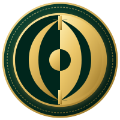
AI 미래 실증 013,471평 자연 속 미래형 스마트 생태자립마을
양평 지평면 11,476㎡ 부지에 첨단 스마트 온실, 웰니스 센터, 생태 정원이 유기적으로 결합된 지상천국 전체 조감도입니다.
우리가 구현할
지상천국의 3대 핵심 축
자연 순환 생태계와 자립형 경제를 결합한 마스터플랜의 3대 미래 실증 기둥
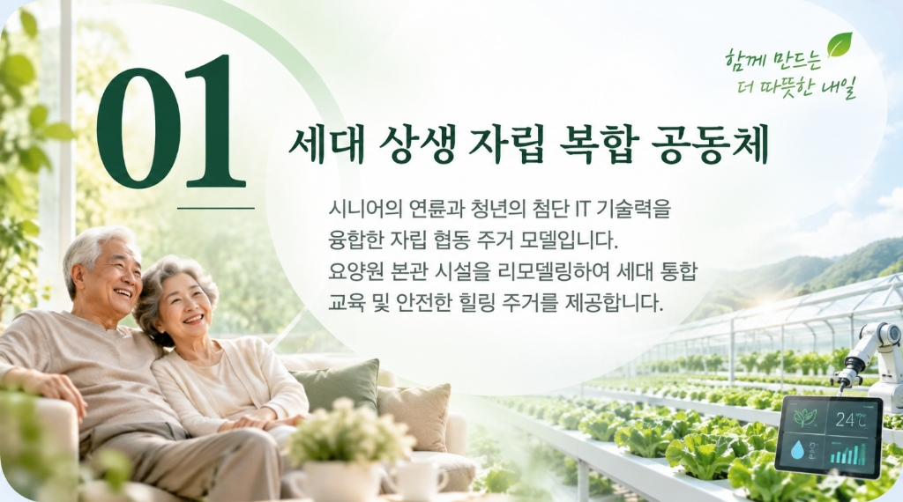
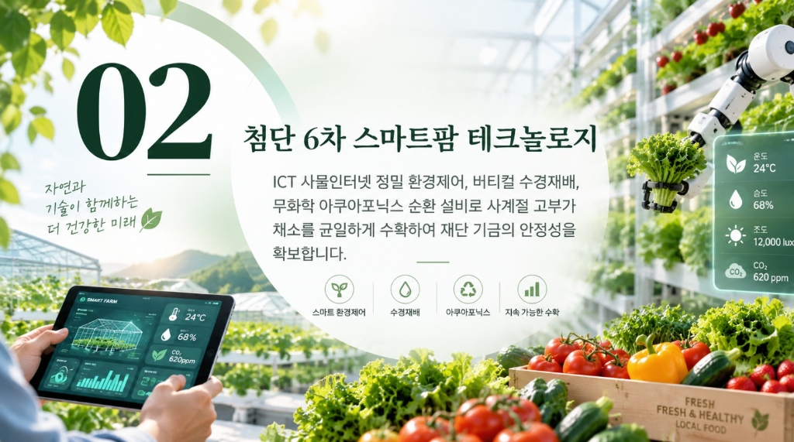
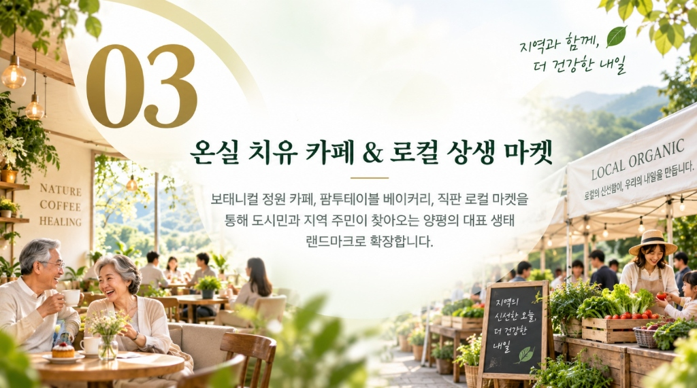
첨단 스마트팜 8대 혁신 현장
1 / 8
smart_toy 세대 통합 AI 스마트팜
AI 협동 로봇 & 세대 상생 온실
노동력 70%↓어르신 조합원과 청년 농업인이 함께 파종·관리하며, 자율주행 모바일 로봇이 수확 상자 운반과 모니터링을 전담합니다.
2 / 8
nutrition 수직 타워 & 고당도 과채
버티컬 타워 & 사계절 딸기
생산성 500%↑스테인리스 모듈형 수직 타워에서 유럽형 샐러드 채소와 고당도 무농약 딸기를 허리 굽힘 없이 손쉽게 수확합니다.
생태 아쿠아포닉스 유기 순환
100% 무화학비료친환경 담수어 양식 수조의 유기물이 미생물 여과를 거쳐 상부 채소의 천연 영양분이 되는 완전 무항생제 생태 순환 설비입니다.
4 / 8
terminal 지능형 텔레메트리 관제
AI 생육 진단 & 원격 모니터링
빅데이터 최적화투명 디스플레이와 AI 분광 센서가 일조량, 습도, 양액 농도를 24시간 분석하여 최적의 생육 환경을 자동 유지합니다.
AI 어그리봇 모종 이식 & 파종
시니어 맞춤무거운 모종 운반과 정밀 파종은 AI 로봇이 보조하고, 어르신과 청년 농업인이 정성스레 교감하며 건강한 일자리를 가꿉니다.
수직 타워 고당도 딸기 수확
연중 균일 수확사계절 최적화된 ICT 정밀 양액 공급으로 당도와 영양가가 뛰어난 딸기를 연중 균일하게 수확하여 고수익을 창출합니다.
자연 순환 생태 바이오 연구실
무화학 순환담수어 배설물을 천연 유기 비료로 정화 재순환하여 화학 비료 없이 청정 채소를 길러내는 친환경 미래 농업 연구실입니다.
8 / 8
solar_power 2,000평 하이브리드 온실
태양광 2,000평 스마트 온실
에너지 자립형온실 지붕의 태양광 발전과 지열 냉난방을 결합하여 에너지 소비를 40% 이상 절감하는 지속가능한 친환경 스마트 팰리스입니다.
기존 요양원의 품격 있는 재탄생
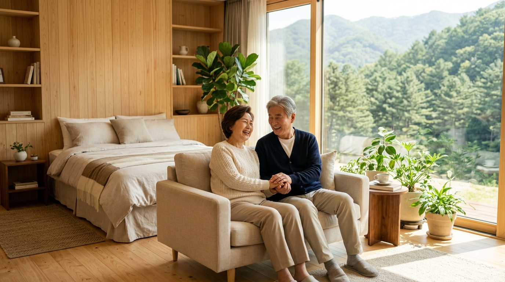
1 / 8 bed 독립 주거 스위트 내부1인 독립 주거 힐링 스위트
편백·마운틴뷰남향 통창으로 양평 숲이 한눈에 펼쳐지는 편백나무 원목 침실로, 어르신의 사생활과 안락한 휴식을 최우선 배려했습니다.
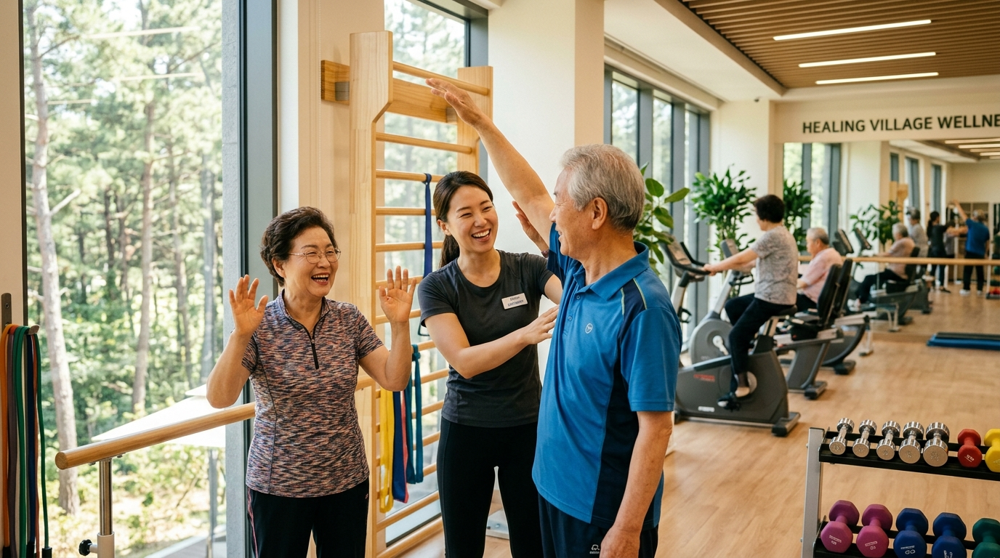
2 / 8 fitness_center 시니어 웰니스 헬스장숲속 조망 재활 피트니스
맞춤 코칭잣나무 숲을 조망하며 전문 트레이너의 지도 아래 관절 부담 없는 부드러운 스트레칭과 근력 재활 운동을 즐깁니다.
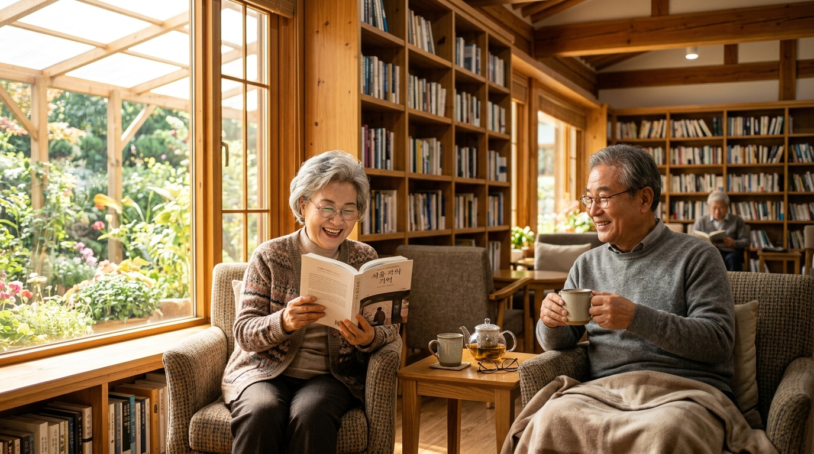
3 / 8 menu_book 원목 북 라운지 & 서가햇살 머무는 지혜의 북 라운지
정원 조망천장까지 닿는 높은 원목 서가와 아늑한 1인 소파에서 따뜻한 유기농 차를 마시며 사색과 독서의 여유를 누립니다.
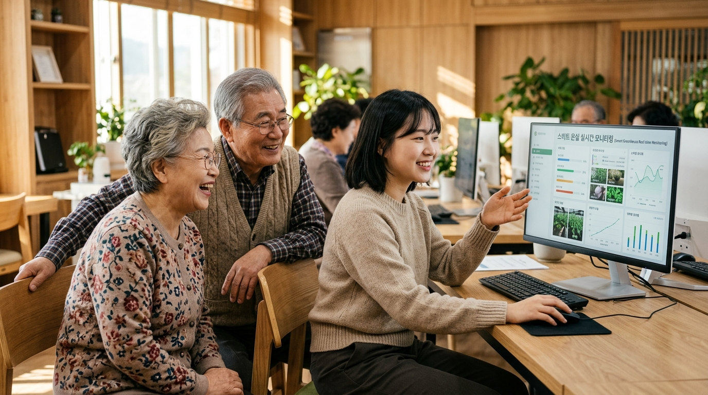
4 / 8 computer 청년-시니어 디지털 멘토링함께 배우는 스마트팜 관제
노소 상생청년 연구원이 어르신들께 대화면 스마트팜 생육 대시보드를 친절하게 안내하며 세대 간의 벽을 허물고 협력합니다.
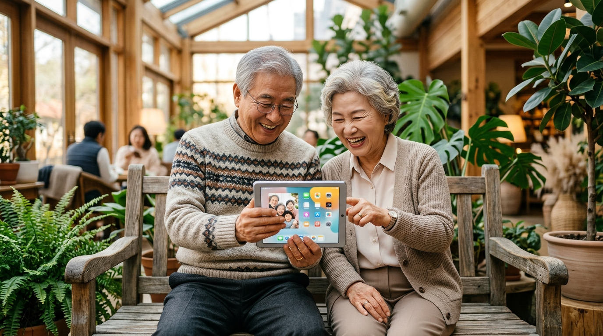
5 / 8 tablet_mac 스마트 태블릿 라이프원터치 가족 영상통화 & 케어
스마트 안심터치 한 번으로 자녀·손주와 고화질 영상통화를 나누고 매일의 혈압, 수면, 온실 작물 성장을 기분 좋게 확인합니다.
천연 음이온 산소 힐링 라운지
공기청정 99%벽면 전체를 덮는 식물벽과 잔잔한 폭포 수경시설을 통해 미세먼지를 차단하고 숲속 피톤치드 산소를 상시 공급합니다.
7 / 8
door_front 독립 주거 스위트 (36세대)
원목 테라스 독립 주거 유닛
편백·황토 시공기존 4~6인 다인실 병동을 쾌적한 원목 독립 주거로 개조하여 어르신의 사생활 보장과 따뜻한 이웃 교류를 실현합니다.
사계절 숲을 품은 아쿠아 테라피
산림 조망 100%양평 잣나무 숲을 한눈에 감상할 수 있는 통창 회랑에 천연 미스트와 온천수를 연계하여 어르신 관절 치유를 돕습니다.
온실 치유 카페 & 로컬 상생 마켓
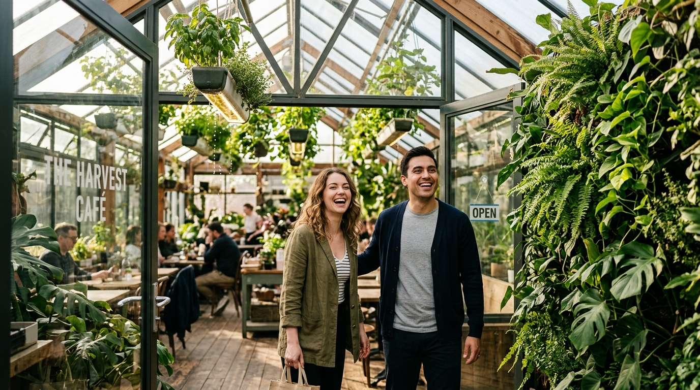
1 / 8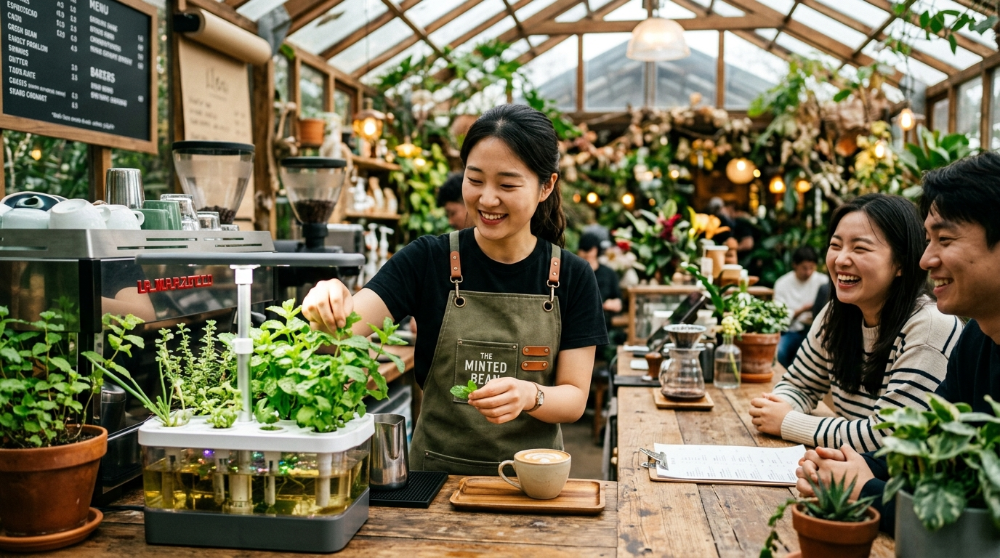
2 / 8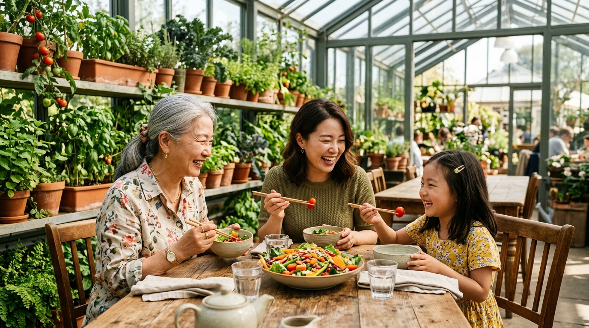
3 / 8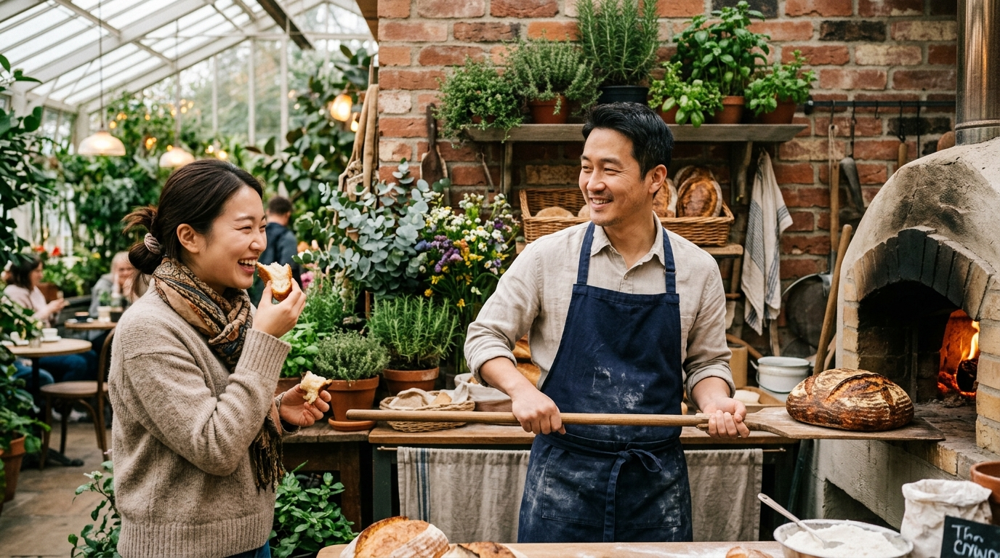
4 / 8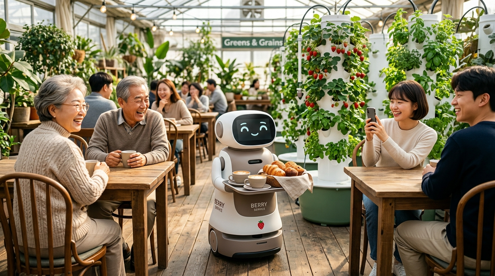
5 / 8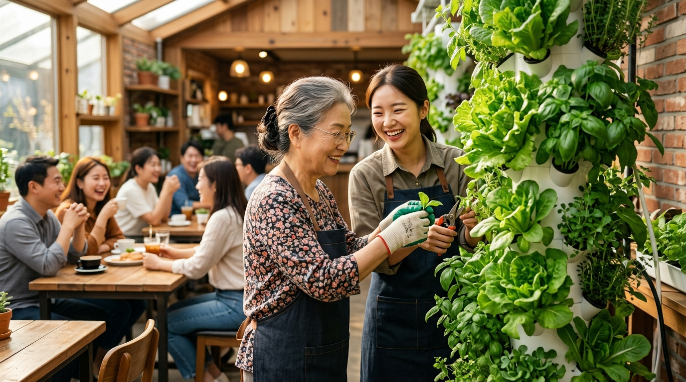
6 / 8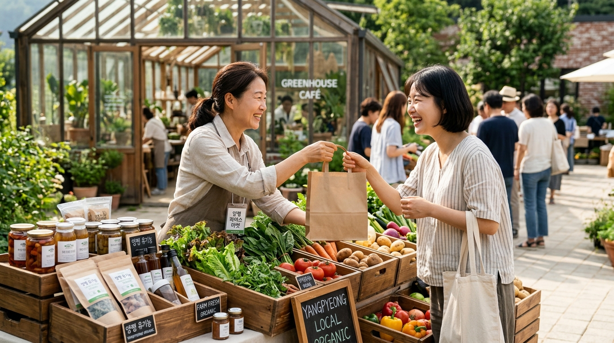
7 / 8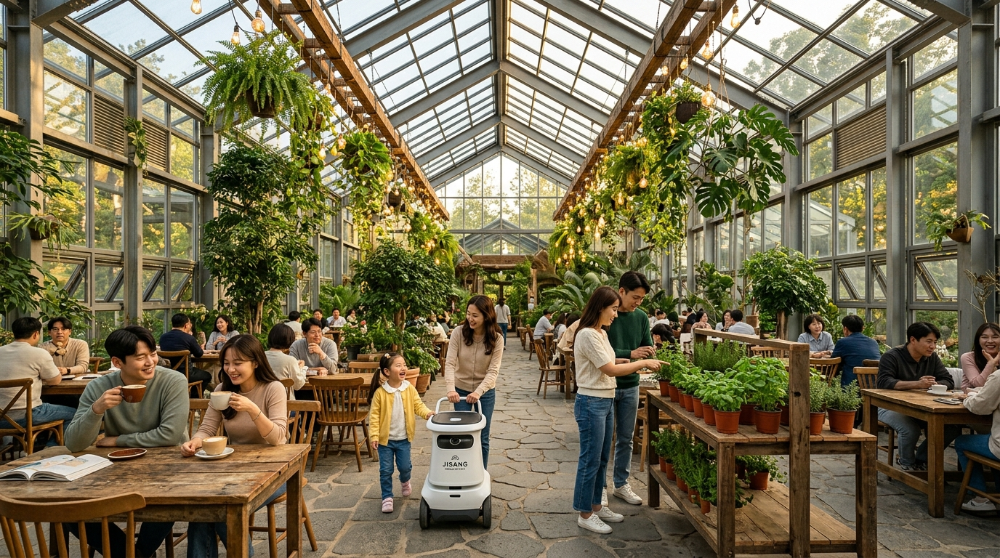
8 / 8햇살 가득한 유리온실 카페로 들어서는 설레는 첫걸음
높은 유리 천장을 통해 눈부신 아침 햇살이 쏟아져 내리고, 천장 가득 매달린 수경재배 허브 플랜터와 생명력 넘치는 수직 식물벽이 방문객을 맞이합니다. 도심의 번잡함을 잊게 하는 감탄과 힐링의 순간입니다.
자연 속 치유 야외 공간 & 캠크닉
1 / 8
outdoor_grill 3대 가족 가든 바비큐
유기농 바비큐 & 글램핑 캠프
주말 방문 명소마을 온실에서 수확한 신선한 채소와 건강한 식재료로 조부모, 자녀, 손주 3대가 둘러앉아 친교를 나누는 열린 식탁입니다.
400m 순환 맨발 어싱(Earthing)
자연 면역 치유맑은 계류와 연꽃 생태 연못을 따라 조성된 촉촉한 붉은 황톳길을 맨발로 걸으며 체내 염증 완화와 마음의 평온을 얻습니다.
어린이와 함께하는 자연 놀이터
세대 융합 체험자유롭게 뛰어놀 수 있는 천연 잔디 광장과 인디언 텐트존에서 도시 아이들에게 흙의 소중함과 자연의 생명력을 전합니다.
숲 조망 온열 아쿠아 스파
자연 온열 치유피톤치드 울창한 잣나무 숲을 바라보며 천연 암반 온열 스파에서 심신의 피로를 풀고 자연과 하나 되는 야외 힐링 공간입니다.
황금빛 노을 아래 글램핑 캠크닉
힐링 감성붉게 물드는 저녁 노을을 배경으로 갓 수확한 팜 채소와 함께 온 가족과 이웃이 둘러앉아 잊지 못할 가든 바비큐 파티를 즐깁니다.
440m 황토 맨발 어싱 치유길
자연 생명력울창한 솔숲 피톤치드 향기를 맡으며 부드러운 천연 황톳길을 맨발로 거닐어 몸의 면역력과 혈액 순환을 극대화합니다.
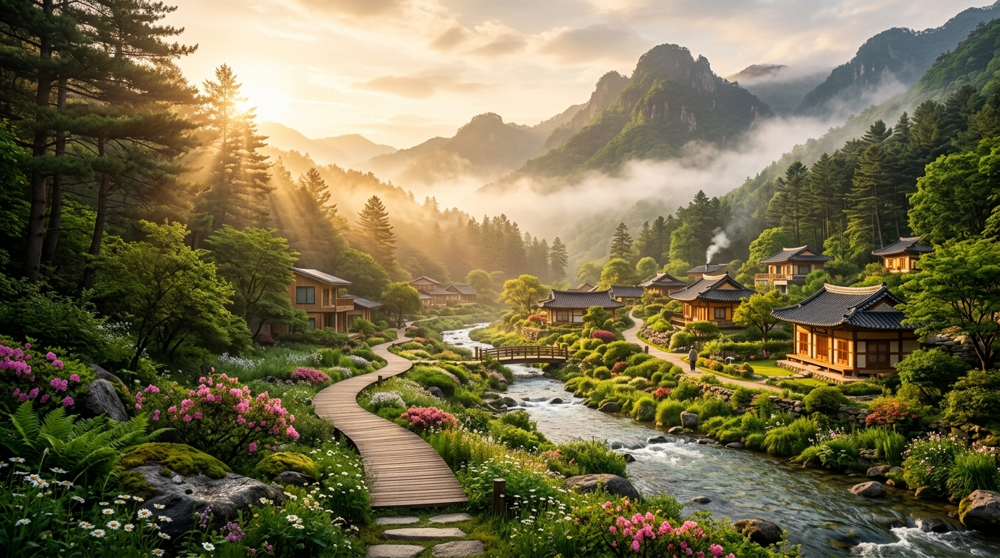
7 / 8 water 청정 계류 솔숲 쉼터청정 계류와 잣나무 숲 쉼터
배산임수 명당맑은 계곡물이 흐르고 수령 수십 년의 잣나무가 병풍처럼 둘러싼 천혜의 자연 속에서 물소리와 새소리를 들으며 오롯이 쉬어갑니다.
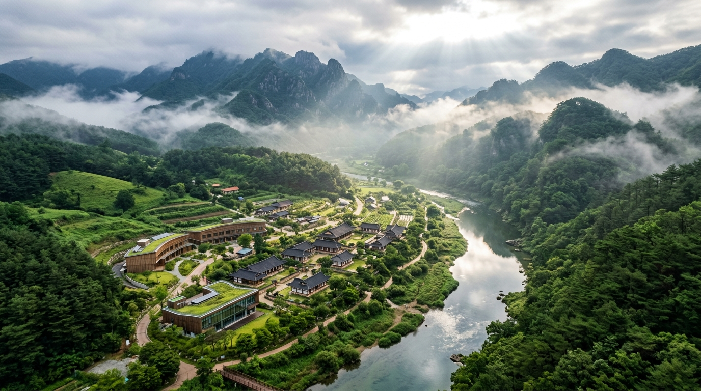
8 / 8 landscape 지상낙원 전체 조감자연과 온실의 대파노라마
3,471평 완성형수려한 양평 산세와 완경사 배산임수 명당에 조화롭게 안착한 온실, 잔디마당, 글램핑 파크, 치유 산책로가 한눈에 펼쳐집니다.
사업 부지 실측 및 입지 정밀 검증
양평군 여양2로 소재, 지적 실측 3종 도면 데이터
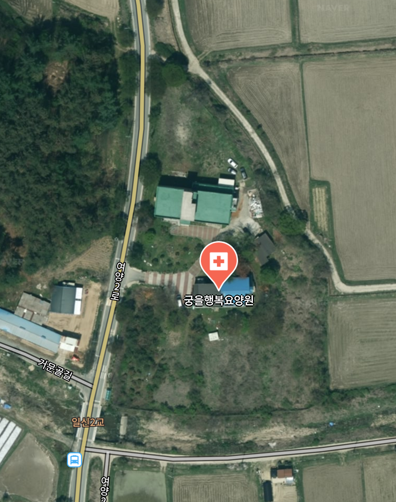
안전진단 통과 골조를 완벽 보존·재생하여 신축 대비 약 42%의 건축비 절감 및 9개월 이상의 인허가·공기 단축 효과를 완성합니다.
천도교 재단 이사회 사업수지 요약
자립형 공동체 운영을 통한 재단 자산가치 극대화
단계별 4단계 추진 로드맵
철저한 인허가 검증과 단계별 자립 재무 확립 플랜
실측 지적 기반 농지·복지시설 용도 정비, 천도교 유지재단 이사회 최종 승인 및 특수목적법인(SPC) 발족.
골조 안전진단 보강, 36세대 주거 유닛 전환, 바이오월 회랑 및 온실 기초 토목·관수 배관 완공.
수경재배 타워 및 아쿠아포닉스 설비 1,000평 가동, 공동체 조합원 1기 입주 및 온실 정원 카페 프리오픈.
로컬 마켓 및 글램핑 파크 공식 개장, 조합원 자립 배당 실현 및 2단계 온실 증축으로 전국 선도 모델 안착.

재단 이사회 & 참여 문의
상세 사업타당성 보고서(PDF) 및 현장 실사 브리핑을 원하시면 아래 양식을 접수해 주십시오.